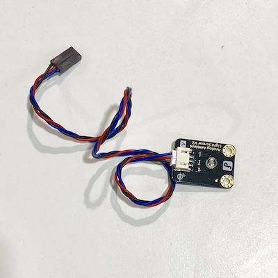
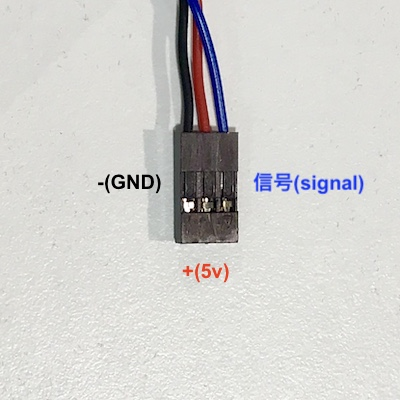
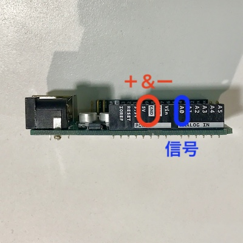
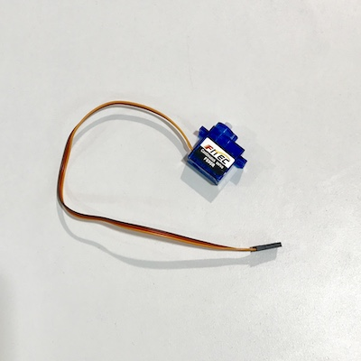
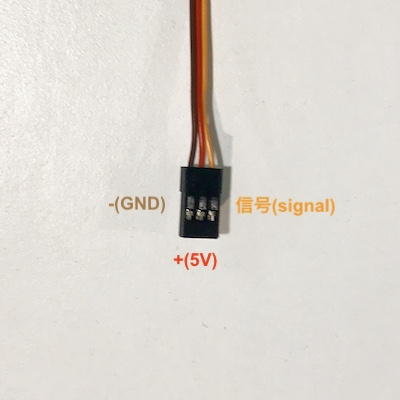
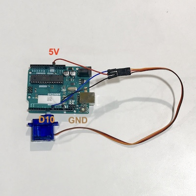

インプットデバイスとも呼ばれ，周辺環境情報を取得し送信する．
人間でいったら「感覚器官」．耳や目，皮膚など．
デジタルセンサーとアナログセンサーがあり，デバイスそのものは，
デジタルはHIGHかLOW（0か1）などの数値を離散的に返し，
アナログは0〜1023などの値を概ね電圧を使い連続的に返す．
デバイスによっては，デジタル信号を返すものもある．
センサーで情報を取得し，パソコンのシリアルポートから値を受け取ってみる
事前準備
電源を入れていない状態で，センサーをArduinoにつなぐ
- センサーから出てきている線は3本

- それぞれ以下のような配置

- ジャンパー線を使って，Arduinoと接続する信号はA0

しゃきょう！
void setup() {
// 9600bpsで通信をするように，シリアルポートを初期化
Serial.begin(9600);
}
void loop() {
// アナログピン0(A0)の値を読み，セットバリュー変数に格納
int sensorValue = analogRead(A0);
// 読み込んだ値をシリアルポートに（IDEで読める形で）送信
Serial.println(sensorValue);
// 安定的に値を読めるように，1/1000秒まつ
delay(1);
}
アップロード＆値をゲット！
- さっきと同じように検証後のアップロード
- 組み込みLEDがフラッシュしたら，エディタの左側にある"Monitor"を開く
task
- センサーを変えてみて，帰ってくる値を確認する
アウトプットデバイスとも呼ばれ，命令に合わせて何かしらの仕事をし出力する．
人間で言ったら，筋肉や声帯など．
DCモータは電流から磁場を発生し回転運動に変えるし，
サーボモータは上記と仕事＋信号を受け取りた上で，位置（角度）の制御が可能．
ディスプレイは液晶などを使い図形を描ける
スピーカーは音が出るし，LEDは光るという仕事をそれぞれ行える．
サーボモーターを動かしてみる
事前準備
電源を入れていない状態で，サーボをArduinoにつなぐ
- サーボから出てきている線は3本

- それぞれ以下のような配置

- ジャンパー線を使って，Arduinoと接続する信号はD10

しゃきょう！
// ライブラリの読み込み
#include
// サーボオブジェクトを作る
Servo myservo;
//中間位置を設定
const int neutral = 95;
void setup () {
myservo.attach(10); // サーボの信号ピンをD9に
}
void loop () {
// 時計回り高速
myservo.write(neutral - 90);
delay(2000);
// 停止
myservo.write(neutral);
delay(1000);
// 反時計回り高速
myservo.write(neutral + 90);
delay(2000);
// 停止
myservo.write(neutral);
delay(1000);
// 時計回り低速
myservo.write(neutral - 10);
delay(2000);
// 停止
myservo.write(neutral);
delay(1000);
// 反時計回り低速
myservo.write(neutral + 10);
delay(2000);
// 停止
myservo.write(neutral);
delay(1000);
}
サーボはどうやって制御されている？
PWMで制御しています